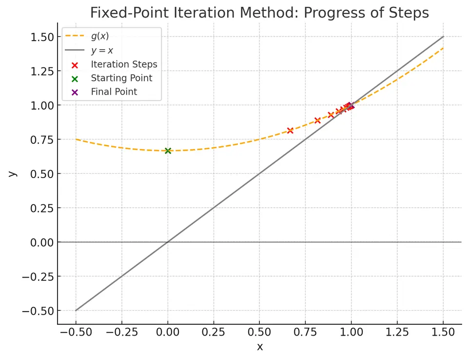

Relaxation Method
The relaxation method, commonly referred to as the fixed-point iteration method, is an iterative approach used to find solutions (roots) to nonlinear equations of the form $f(x) = 0$. Instead of directly solving for the root, the method involves rewriting the original equation in the form:
$$ x = g(x), $$
where $g(x)$ is a suitable function defined such that a fixed point of $g(x)$ corresponds to a root of $f(x)$. That is, if $\alpha$ is a root of $f(x)$, then $g(\alpha) = \alpha$.
This approach transforms a root-finding problem into a fixed-point problem. If the iteration defined by:
$$ x_{n+1} = g(x_n) $$
converges, it will do so to the fixed point $\alpha$, which is also the root of the original equation. Relaxation methods can sometimes converge faster than bracket-based methods (like bisection), but they do not come with guaranteed convergence from any starting point. Convergence depends on the properties of the chosen $g(x)$ and the initial guess $x_0$.
Conceptual Illustration:
Imagine the line $y = x$ and the curve $y = g(x)$. A fixed point $\alpha$ is a point where the two curves intersect:

The iteration takes a guess $x_n$, and then maps it to $x_{n+1}=g(x_n)$. If these iterations hone in on the intersection, the sequence converges to the root $\alpha$.
The first task is algebraic: choose a fixed-point equation that is equivalent to the original root problem on the intended domain. The second is numerical: check that its iteration attracts nearby points. Dividing by an expression that can vanish, squaring an equation, or introducing a square root can change the solution set or its domain, so equivalence should be established before a convergence argument is applied.
Mathematical formulation
Starting Point:
Given a nonlinear equation:
$$ f(x) = 0 $$ we want to find $\alpha$ such that $f(\alpha)=0$.
Rewriting the Equation:
We rearrange the equation into a fixed-point form:
$$ x = g(x) $$
There can be infinitely many ways to rewrite $f(x)=0$ as $x=g(x)$. A suitable $g(x)$ must be chosen to ensure convergence.
Once we have:
$$ x_{n+1} = g(x_n) $$
if the iteration converges, it must converge to $\alpha$ satisfying $\alpha = g(\alpha)$.
Convergence Conditions:
A key sufficient condition for convergence is that:
$$ |g'(x)| < 1 \quad \text{in the neighborhood of } \alpha. $$
If the derivative of $g(x)$ in the region around the fixed point is less than 1 in absolute value, the iteration will typically converge.
Derivation
Step 1: From root to fixed point problem.
Suppose we have $f(x)=0$. We isolate $x$ on one side:
$$ x = g(x) $$
If $\alpha$ solves $f(\alpha)=0$, then $g(\alpha)=\alpha$.
Step 2: Fixed-point iteration.
Define a sequence $\{x_n\}$ by choosing an initial guess $x_0$ and applying:
$$ x_{n+1} = g(x_n). $$
Step 3: Convergence insight.
Consider a point $\alpha$ such that $g(\alpha)=\alpha$. If we expand $g$ near $\alpha$:
$$ g(\alpha + h) \approx g(\alpha) + g'(\alpha)h = \alpha + g'(\alpha)h $$
If $|g'(\alpha)|<1$, then iterating this process will reduce the error $|h|$ at each step, leading to convergence of $x_n$ to $\alpha$.
In essence, the choice of $g(x)$ greatly influences the convergence behavior. A poorly chosen $g(x)$ may lead to divergence or very slow convergence.
A convergence guarantee and an error estimate
A useful sufficient condition is to find a closed interval $I=[a,b]$ with $g(I)\subseteq I$ and a uniform bound $|g'(x)|\leq q<1$ throughout $I$. The first condition keeps every iterate in the interval; the second makes $g$ a contraction. There is then a unique fixed point $\alpha$ in $I$, and every $x_0\in I$ converges to it.
The mean value theorem gives
$$ |x_{n+1}-\alpha|=|g(x_n)-g(\alpha)|\leq q|x_n-\alpha|\leq q^{n+1}|x_0-\alpha|. $$
Since the unknown root is unavailable to a stopping test, sum the geometric bound on successive steps instead:
$$ |x_{n+1}-\alpha|\leq\frac{q}{1-q}|x_{n+1}-x_n|. $$
Thus a small step is a certified position-error estimate only when a contraction factor is known. For a relaxed iteration, apply this argument to the relaxed map, with its own contraction factor.
In the worked example, $g(x)=(x^2+2)/3$ maps $[0,1]$ into $[2/3,1]$ and satisfies $|g'(x)|\leq2/3$ there. Starting at zero therefore converges to $1$. At the other fixed point, $g'(2)=4/3$, so the plain iteration is locally unstable. The algebraic rearrangement determines which root is attractive.
Algorithm steps
Input:
- A function $f(x)$ and a corresponding $g(x)$ such that $f(x)=0$ is equivalent to $x=g(x)$.
- An initial guess $x_0$.
- Optionally a relaxation factor $\omega$ (see below); if it is not given, it is chosen adaptively at every step.
- A tolerance $\epsilon >0$ or a maximum number of iterations $n_{\max}$.
Initialization:
Set iteration counter $n=0$.
Iteration:
Step 1. Compute the next approximation (with $\omega = 1$ this is the plain iteration; the general relaxed step is given in the next section):
$$ x_{n+1} = (1-\omega)\,x_n + \omega\, g(x_n) $$
Step 2. Check convergence:
- If $|x_{n+1}-x_n|< \epsilon$, stop and return $x_{n+1}$. (The residual $|g(x_{n+1}) - x_{n+1}|$ is not tested separately.)
- If $n_{\max}$ iterations have been performed without meeting this test, stop with an error (non-convergence).
III. Otherwise, set $n = n+1$ and repeat from step I.
Output:
- Approximate root: $x_{n+1}$ (an error is raised instead if the iteration did not converge).
- Number of iterations performed, if tracked as a diagnostic. The repository function
relaxation_methodreturns only the approximate point, rather than a point-and-count pair.
Relaxation factor
The implementation does not iterate $x_{n+1}=g(x_n)$ directly but a relaxed step with a factor $\omega$:
$$ x_{n+1} = (1-\omega)\,x_n + \omega\, g(x_n). $$
Every fixed point of $g$ is a fixed point of this map for any $\omega \neq 0$, and the derivative of the relaxed map at $\alpha$ is
$$ 1 - \omega\,(1 - g'(\alpha)). $$
So $\omega$ can turn a diverging iteration ($|g'(\alpha)| \geq 1$) into a converging one, by making this derivative small in absolute value.
For a fixed relaxation factor and real slope $s=g'(\alpha)$, the local requirement is $|1-\omega(1-s)|<1$, equivalently $0<\omega(1-s)<2$. If $s<1$, a suitable positive factor can help; if $s>1$, a negative factor is needed. No constant factor makes a slope of exactly $s=1$ contract to first order. This explains both the potential benefit and the limits of relaxation.
- User-supplied $\omega$: if a value is passed it is used unchanged at every step.
- Adaptive $\omega$ (default): at each iterate $x_n$ the slope $g'(x_n)$ is estimated with a central difference ($h = 10^{-8}$) and
$$ \omega_n = \begin{cases} -\dfrac{1}{g'(x_n)}, & |g'(x_n)| \geq 1,\\[2mm] 1, & |g'(x_n)| < 1. \end{cases} $$
Where the plain iteration already contracts ($|g'|<1$) nothing is changed. Where it would not, $\omega_n=-1/g'(x_n)$ gives a relaxed-map derivative $1/g'(x_n)$, of absolute value at most $1$ (strictly less than $1$ when $|g'(x_n)|>1$). This is a heuristic: it uses only local slope information, and for $|g'|=1$ the relaxed-map derivative still has magnitude $1$, so contraction is not established. For example, $g(x)=1-x$ has slope $-1$, the heuristic chooses $\omega=1$, and the plain iteration can alternate forever.
Example
Given Equation:
$$ x^2 - 3x + 2 = 0 $$
This equation factors as $(x-1)(x-2)=0$, so the roots are $x=1$ and $x=2$.
Choose a Fixed-Point Form:
We can rearrange the equation to:
$$ x = \frac{x^2 + 2}{3} $$
Thus:
$$ g(x) = \frac{x^2 + 2}{3} $$
Initial Guess:
Let $x_0=0$.
Iteration 1:
$$ x_1 = g(x_0) = g(0) = \frac{0^2 + 2}{3} = \frac{2}{3}\approx0.6667 $$
Iteration 2:
$$ x_2 = g(x_1) = g(0.6667) = \frac{(0.6667)^2 + 2}{3} = \frac{0.4444 + 2}{3}\approx \frac{2.4444}{3} = 0.8148 $$
Iteration 3:
$$ x_3 = g(x_2) = g(0.8148) = \frac{(0.8148)^2 +2}{3} = \frac{0.6639+2}{3}\approx \frac{2.6639}{3} = 0.8880 $$
Repeating this process, we observe $x_n$ approaching one of the roots (in this case, it will move closer to $x=1$, depending on the behavior of $g(x)$ near that root).
Advantages
- Flexible formulation allows the relaxation method to work by simply rewriting the equation in fixed-point form $x = g(x)$ and iterating, making it conceptually straightforward.
- Potentially faster than bisection, the method can converge more quickly when $g(x)$ is well-chosen, particularly if $|g'(x)| < 1$ near the root.
- Broad applicability makes the method suitable for nonlinear equations that do not require derivatives, although convergence often depends on the properties of $g(x)$.
- Straightforward implementation is achieved by directly iterating $x_{n+1} = g(x_n)$, provided an appropriate $g(x)$ is identified.
Limitations
- No guaranteed convergence means the method may fail if $|g'(x)| \geq 1$ in the vicinity of the root, unlike bracketing methods that ensure convergence under certain conditions.
- Sensitive to the choice of $g(x)$, as some transformations of $f(x) = 0$ into $x = g(x)$ promote convergence while others lead to divergence.
- Initial guess importance highlights that a poor starting point can result in divergence or very slow convergence, making the method less robust in such cases.
- Dependent on continuity and differentiability, with standard convergence theory requiring $g(x)$ to be continuous and differentiable, limiting its applicability for problems that do not meet these conditions.